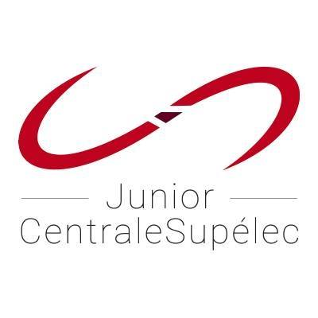
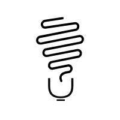

Expériences
September 2017 - Today
Réalisateur d'études - Junior CentraleSupéléc
Réalisateur d'études (web-developpement,data science) pour la Junior Entreprise de CentraleSupéléc, classée meilleure JE de france et 2eme meilleure JE d'europe.

September 2017 - Today
Président de GENIUS
Président de l'association GENIUS de CentraleSupéléc, organisant des évènements autour du monde de l'entreprenariat et de la création de StartUp

September 2016 - July 2017
Chef de projet - TIPE
Création d'un mini-chauffage par induction éléctromagnétique et étude de son efficacité électrique/thermique en binôme dans le cadre du TIPE